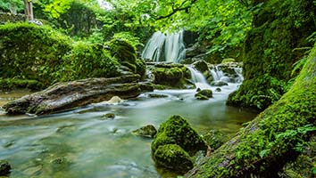
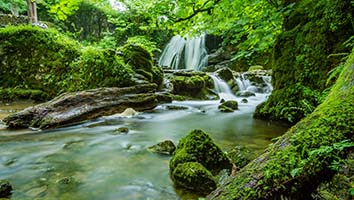

土精靈主題區
意涵
【樸實】
隨著音樂文化的遞進時間軸，完成當地環境音製程，推廣音樂與生活的各種可能性，從音樂知識傳遞與遊客體驗開始，彷彿生命開始運行於音樂的教學體驗，印染的自然知識與學習，最後人跟音樂的創意或更多想像，相信未來都可以在這座園區內被實現與落實！
意涵
【簡約)】
「簡約」並非捨棄細節，壓縮美感。它是過濾不必要的繁複，回歸設計美學的本質，構思不過度浮誇或耗費，並反映對人本質的尊重；「簡約」就是少了浮面，多了意義。
主題
【都市噪音】
噪音，又稱噪聲，從物理角度上看，是聲波的頻率、強弱變化無規律、雜亂無章的聲音。絕大部分噪音都是准隨機波，如果符合數學上的隨機過程，那就屬於白雜訊。噪音是令人生理或心理上覺得不舒服，一般讓聽到它的人不悅、不舒服、不想要的，或帶來煩惱的、不受歡迎的聲音，影響人的交談或思考、工作學習休息的聲音。一般人們用分貝（dB）來量噪聲的強度，用信噪比（S/N）來衡量噪音對有用信號的影響程度。噪音的可能來源有飛機、汽車、工廠、建築工地、日常生活等。噪音是環境污染之一，各國政府一般有相應的法律、規定管制噪音。
主題
【都市熱島-鋪面篇】
建築物與鋪面主要之影響係來自都市表面材質之高吸熱力、街道幾何形式之熱吸收增加。建物因結構物形狀不同、表面材質不同，導致建物溫度高於周邊區域。鋪面表面材質比熱、反照率、熱容量的不同，導致地表溫度也有所差異。


透水鋪面設計
增加透水鋪面，打造會呼吸土地。
噪音偵測系統
主要偵測機動車輛噪音，自動偵測以及車牌辨識，智慧化系統減少人力支配，有效率抓改管車輛，嚇阻道路噪音造成居民健康。除此之外，增加多元功能，如測速儀、空氣偵測儀等，讓設備效能最大化。
IoT智慧系統自然聲音設計
打造石子鋪面，當腳踩踏時，石子間摩擦發吱吱作響聲，專注體驗觸覺、聽覺感官，掩飾機動車噪音的影響。創造音樂-建設音樂景觀設施，與民眾互動。水流、噴泉-設計水體相關設施，發出水聲音，掩蓋噪音。植栽-種植易受風晃動的植栽，發出聲音，例如柳樹、竹子。人聚集場所-人聚集聊天，散布人聲，產生安全感。
打造石子鋪面，當腳踩踏時，石子間摩擦發吱吱作響聲，專注體驗觸覺、聽覺感官，掩飾機動車噪音的影響。創造音樂-建設音樂景觀設施，與民眾互動。水流、噴泉-設計水體相關設施，發出水聲音，掩蓋噪音。植栽-種植易受風晃動的植栽，發出聲音，例如柳樹、竹子。人聚集場所-人聚集聊天，散布人聲，產生安全感。
打造石子鋪面，當腳踩踏時，石子間摩擦發吱吱作響聲，專注體驗觸覺、聽覺感官，掩飾機動車噪音的影響。創造音樂-建設音樂景觀設施，與民眾互動。水流、噴泉-設計水體相關設施，發出水聲音，掩蓋噪音。植栽-種植易受風晃動的植栽，發出聲音，例如柳樹、竹子。人聚集場所-人聚集聊天，散布人聲，產生安全感。


 
